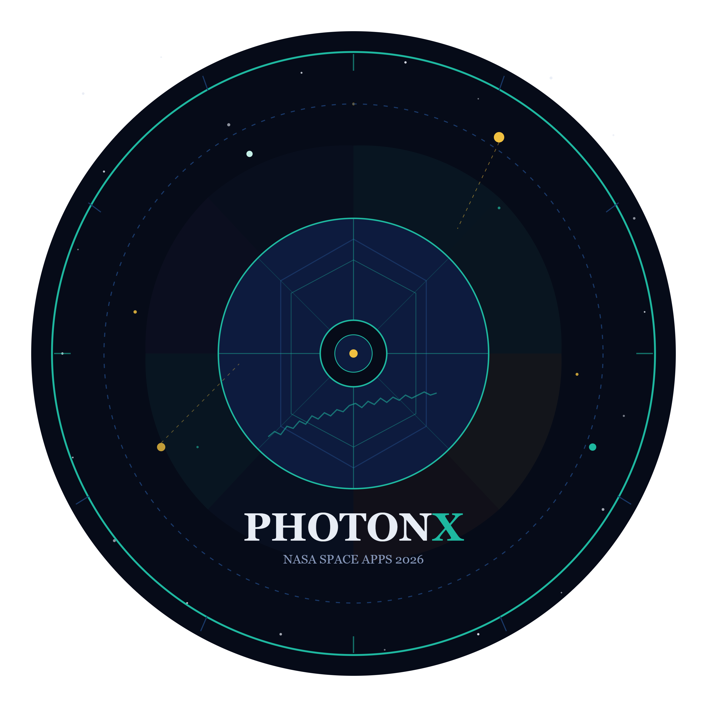
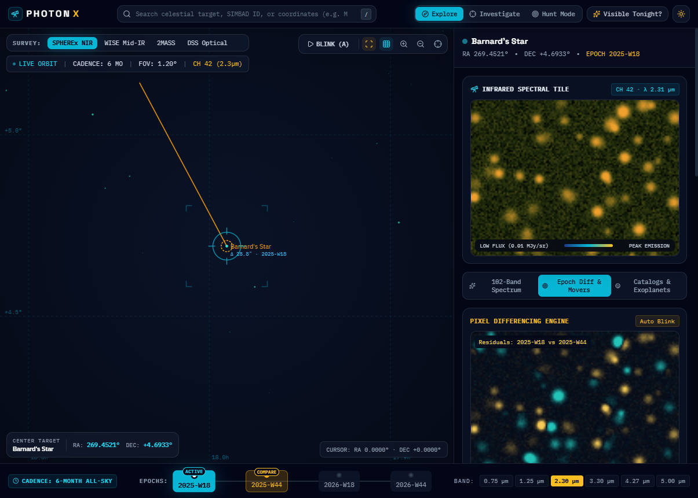
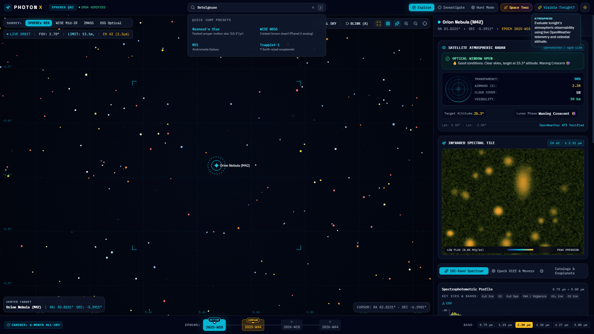

PHOTONX
SPHEREx Infrared Sky Browser & Outer Solar System Discovery Engine
👤 Team Creator
Team PhotonX
Mazonia (Solo Developer)
Software Engineer & Astrophysics Enthusiast
🛰️ Challenge Selected
Planet X and SPHEREx
NASA Astrophysics Division
Focus: Detecting outer-solar system moving objects
🔗 Provenance & Code
Primary Data: SPHEREx QR2 (DOI: 10.26131/IRSA629)
Repo: github.com/Mazonia/photonx
License: MIT Open Source
Strict 7-Slide Rule Adherence • Zero-Install Universal Web Access • Full Keyboard & WCAG AA Accessibility
The Physical Challenge: Why Optical Telescopes Fail
The inverse-fourth-power optical illumination collapse vs. Wien's law thermal near-infrared emission.
❄️ 1/r⁴ Solar Illumination Collapse
- Reflected sunlight falls off as 1/r² out, and 1/r² back: Total Flux ∝ 1/r⁴.
- At 400 AU, solar irradiance is 1/25,600,000,000th of Earth's solar constant.
- A 5-Earth-mass planet at 400 AU has visual magnitude V > 23.5—pitch black in optical surveys like Hubble, Gaia, or Pan-STARRS.
- Even cold bodies at 30–40 K radiate their own primordial internal heat in the infrared.
📊 The SPHEREx Opportunity & Data Flood
- SPHEREx observes from 0.75 µm to 5.00 µm continuously across 102 distinct spectral channels.
- Full-sky survey repeated every 6 months generates pristine multi-epoch temporal baselines.
- The Bottleneck: Billions of raw spectral pixels locked in complex FITS archives.
- The Signal: An outer solar system object moves against fixed background stars between 6-month epochs.
PhotonX: Real-Time Infrared Celestial Observatory
A zero-install, GPU-accelerated web platform turning multi-epoch SPHEREx data into an intuitive discovery lab.

🔭 Core Capabilities
- HTML5 Canvas Celestial Engine: Fluid navigation from 45° constellations down to 0.05° deep fields with dynamic limiting magnitude scaling.
- Clyde Tombaugh Optical Blink Comparator: Rapidly alternates between 6-month survey epochs with one tap of the Spacebar.
- 102-Band Spectrophotometry: Instantaneous 0.75–5.0 µm curve plotting with water ice (1.4, 1.9 µm), CO (2.3 µm), and CO₂ (4.27 µm) absorption markers.
- Interactive Target Resolution: Jump to Barnard's Star, WISE 0855, Orion Nebula, or any custom RA/Dec coordinate.
Automated Mover Detection & Pixel Differencing
Sub-pixel coordinate alignment, flux differencing, and automated centroid shift isolation.

⚡ Mathematical Difference Pipeline
- Step 1: Point-Spread Normalization: Aligns coordinate geometry and balances flux scales across survey epochs.
- Step 2: Subtraction Matrix: Evaluates ΔI(x, y) = I_B(x, y) − I_A(x, y). Stationary stars subtract to zero.
- Step 3: Background Noise (σ): Computes local median and noise variance across the field.
- Step 4: 3σ Thresholding: Flags negative residuals at Epoch A and positive residuals at Epoch B.
- Step 5: Centroid Clustering: Computes sub-pixel RA/Dec centers, total shift in arcseconds, and position angle (θ).
Multi-Mission NASA Ecosystem & Seeing Radar
Fusing space telescope telemetry with live weather conditions for ground follow-up.

🚀 Live Data Integrations
- NASA SPHEREx QR2: Caltech/IPAC IRSA collection (DOI: 10.26131/IRSA629) with SIA2 query service.
- NASA NeoWs Asteroid Radar: Real-time near-Earth asteroid tracking and miss distances in Lunar Distances.
- NASA DONKI Space Weather: Live solar flare and Coronal Mass Ejection monitoring.
- 3-Tier Weather Intelligence: Meteomatics MCP → OpenWeather → Open-Meteo astronomical seeing fallback.
- Pickering Airmass (X = 1/sin(alt)): Evaluates ground atmospheric seeing disc in arcseconds (e.g. 1.8").
Democratizing Discovery: Hunt Mode & Scientific Briefs
Turning passive readers into active contributors to planetary astrophysics.

🎮 Citizen Science Framework
- Gamified Hunter Ranks: Progressive levels: Infrared Tracker → Kuiper Belt Scout → Deep Space Pioneer.
- Citable Discovery Briefs: One-click export of formal Markdown observation reports citing IRSA DOI 10.26131/IRSA629.
- Guided Cosmic Tour: Interactive educational journey for students explaining high-proper motion stars and cold brown dwarfs.
- Chromebook & Mobile Ready: Zero software installation; works in any modern browser with Section 508 / WCAG AA accessibility.
The Road to Planet X: Scalability & Vision
From Space Apps prototype to an open-source global observatory network.
🌐 Full Mission Ingestion
Ingest subsequent SPHEREx data releases across 2025–2027. Multi-year baselines will dramatically amplify sensitivity to slow, distant trans-Neptunian objects.
🤖 In-Browser Orbit Fitting
Implement Gauss and Väisälä initial orbit determination in WebAssembly to compute semi-major axis (a) and inclination (i) directly from 3-epoch candidate detections.
🔭 Robotic Telescope Relay
Automated INDI/ASCOM alerts triggering immediate optical follow-up from ground observatories worldwide within hours of candidate detection.
“The next great discovery in our solar system could come from anyone looking at the infrared sky.”
Open Source Repository: github.com/Mazonia/photonx • Live Web: mazonia.github.io/photonx